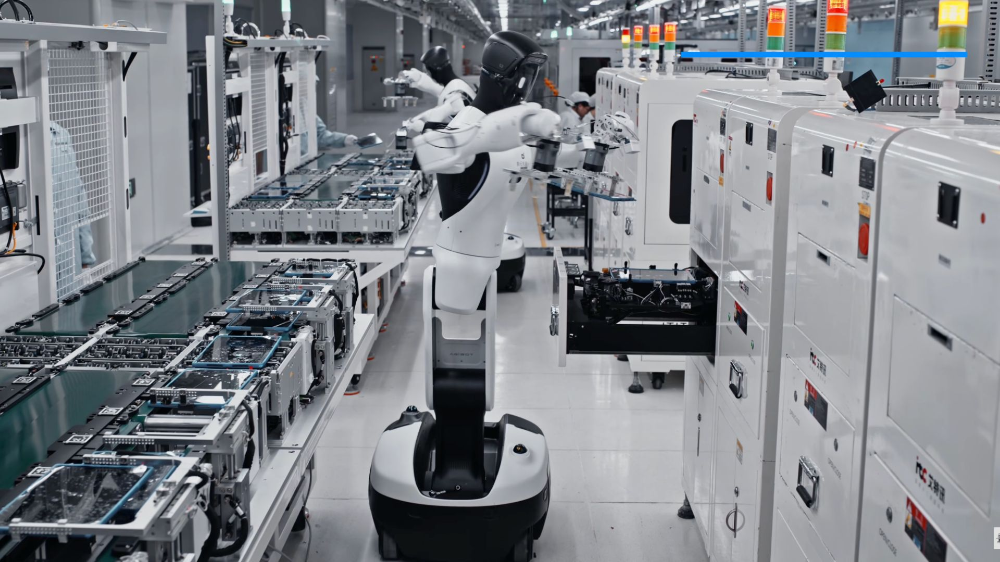

1X firma con EQT para desplegar 10.000 NEO en empresas del portfolio industrial, pero sigue cobrando pre-orders a familias por un envío que solo llegará a EE.UU. y Canadá.
Hace cinco días, la empresa que vende "el primer humanoide para tu hogar" firmó su mayor contrato. No lo firmó con una familia. Lo firmó con EQT, uno de los fondos de inversión industrial más grandes del mundo. 10.000 NEO. Ni uno irá a una familia europea en 2026. Hemos repasado la letra pequeña del contrato y la hemos puesto al lado de la página de pre-orders. No cuadra, y os contamos por qué.
El 12 de abril de 2026, 1X Technologies cerró con EQT — el fondo sueco con uno de los portfolios industriales más grandes de Europa — un acuerdo para desplegar hasta 10.000 NEO en más de 300 empresas del portfolio de EQT entre 2026 y 2030. Fabricación, almacenes, logística. Cuatro años. Diez mil unidades. En fábricas.

Imagen: NEO en entorno industrial. Fuente: Palo Alto Today / The Robot Report.
Mientras, la página de pre-orders del NEO doméstico sigue tal cual estaba: $20.000 por el robot, $200 de depósito, envíos previstos para Q3-Q4 2026… y solo para EE.UU. y Canadá. Nada para Europa. Nada para España. Nada para LATAM.
La pregunta obvia, con los dos titulares puestos uno al lado del otro: ¿a quién vende 1X Technologies de verdad?
La homepage de 1X no ha cambiado. "El primer robot humanoide para el hogar" sigue ahí. El precio, también: $20.000, depósito reembolsable de $200, financiación disponible. El vídeo promocional muestra a NEO doblando ropa, regando plantas, trayendo una taza.

Imagen: 1X NEO en un salón, según la imagen promocional oficial. Fuente: 1X Technologies.
Lo que cambia cuando rascas: el único canal de envío real garantizado para 2026 es el contrato con EQT. Los pre-orders domésticos llevan más de un año cobrándose mientras la fecha de envío se mueve en silencio — "Q3-Q4 2026" es ya el tercer plazo que publica 1X desde el anuncio original. Y la letra pequeña de la web solo habla de dos países.
En paralelo al deal con EQT, 1X presentó su World Model: una arquitectura de aprendizaje por vídeo que, según la empresa, permitirá a NEO "aprender tareas viendo cómo las hacen los humanos". La idea que vende: cualquier petición del usuario se convierte en "capacidad IA on-demand". Plug and play.
Suena bien. El problema es que esa tesis — "NEO aprende del hogar" — se da de bruces con el contrato industrial. El training data que recibirá tu NEO doméstico, si alguna vez te llega, competirá por prioridad de roadmap con el que están generando 10.000 unidades en almacenes de EQT. Y quien factura cada mes manda. No hace falta ser analista para saber a qué casos de uso se van a optimizar las siguientes versiones del modelo.
Cuando investigamos el estado real de los humanoides domésticos hace dos días, ya apuntamos que parte de las tareas "autónomas" del NEO requieren teleoperación humana remota — un operador con gafas VR controla el robot en tiempo real desde Manila, Bangalore o donde esté el turno activo. 1X lo confirma ahora en su documentación técnica: el cliente puede configurar zonas y horarios opt-out, pero la teleop no es opcional para que el producto funcione como promete la demo.
$20.000 por un robot que necesita un segundo humano detrás para que haga lo que el vídeo enseña. Dentro de tu casa. Las implicaciones de privacidad las dejamos para otro artículo, pero conviene tenerlas presentes.
La página oficial es clara: los envíos 2026 son solo para EE.UU. y Canadá. Europa no aparece. UK no aparece. España no aparece. Y no es un problema de logística — es por certificación. Un humanoide doméstico tiene que pasar por CE marking, RED (radio), EMC, homologación eléctrica y, desde el 2 de agosto de 2026, por los requisitos de alto riesgo del AI Act europeo (transparencia del art. 50, supervisión humana, registro en base EU, evaluación de conformidad previa).
1X no ha anunciado roadmap europeo. No hay fecha. No hay distribuidor. No hay servicio técnico previsto. Mientras tanto, el pre-order doméstico sigue visible y accesible desde cualquier IP europea. Pagas, esperas, y ya verás.
El deal con EQT cubre fabricación, almacenes y logística. Más de 300 empresas del portfolio del fondo. Entornos duros, iluminación industrial, estantería metálica, carretillas y uniformes de alta visibilidad. Ese es el contexto donde 10.000 NEO van a operar durante los próximos cuatro años. Fuente: Palo Alto Today, 12 abr 2026.
Los datos que recoja esa flota industrial entrenarán al modelo base. Las iteraciones de hardware las pagarán los ingresos predecibles del contrato industrial. Y el roadmap se optimizará para la cuenta que factura cada mes — no para la que lleva un año esperando su depósito de $200.
No es teoría. Figure Robotics hizo exactamente lo mismo hace 18 meses: su Figure 02 ya ha producido 30.000 X3 en la planta de BMW en Spartanburg. Turnos de 10 horas. El Figure 03 "doméstico" que anuncian para finales de 2026 es, en realidad, un subproducto del hardware que ya se paga solo en la industria. 1X está siguiendo el mismo guion, solo que sin admitirlo.
Una startup de robótica de hardware con un contrato industrial de cuatro años tiene algo encima de la mesa que el resto de su sector no tiene: previsibilidad de ingresos. Eso no se puede deshacer. Cuando el CFO de 1X mira el pipeline, lo que ve es EQT. Los pre-orders domésticos son, en el mejor de los casos, una segunda línea con valor de marca; en el peor, una fuente de caja chica y validación narrativa de cara a la prensa.
No es ni bueno ni malo — es lógica de negocio y cualquier operador lo entendería. El problema es cuando el marketing no sigue a la estrategia, y la homepage sigue diciendo una cosa que el último contrato de la empresa contradice.
Aquí va lo que ninguna keynote de 1X va a decir en voz alta:
El mercado industrial de humanoides proyectado para 2030 supera al consumer en un orden de magnitud. Bloomberg proyecta 1,2 millones de humanoides desplegados globalmente en 2030, con mayoría clara en contextos industriales, logísticos y hospitalarios. El hogar es, por ahora, una línea narrativa — útil para atraer talento, subir valoraciones y justificar el storytelling, pero no para cuadrar el P&L.
Cuando una frase aparece en la homepage pero ya no describe la dirección real del producto, deja de ser una promesa y pasa a ser un claim publicitario. La diferencia es importante si estás a punto de hacer un depósito de $200 con la ilusión de recibir algo en los próximos doce meses.
Depósito de $200, envío solo a un país del que vas a tener que importar por tu cuenta con certificaciones europeas pendientes, producto que depende de teleoperación humana remota, prioridad de desarrollo en fábricas. Ese es el paquete real del NEO doméstico en abril de 2026. Quien lo compre a sabiendas — bien. Quien lo compre pensando que está reservando el equivalente de un iPhone con un año de antelación, va a tener un problema.
El NEO no es un producto doméstico con negocio industrial colateral. Es un producto industrial con un programa de pre-orders domésticos que financia la caja chica y mantiene la narrativa "humanoide para tu hogar" en los medios.
Esto no descalifica a 1X como empresa — tienen hardware decente, un contrato industrial real con un operador serio y un futuro defendible. Descalifica al pitch. Y lo que nos preocupa no es que la empresa pivote hacia donde están el dinero y los casos de uso: es que siga cobrando depósitos a familias con un copy que su propia estrategia del último mes contradice.
¿Y Europa? Si 1X no ha anunciado roadmap europeo, simplemente no hay. El AI Act entra en vigor plenamente el 2 de agosto de 2026, y sus requisitos de transparencia, registro EU y supervisión humana no son precisamente triviales para un producto que depende de teleoperación. Nuestra apuesta: el NEO doméstico no llega a España antes de 2028, y cuando llegue será a un precio más cercano a los 30.000€ — con IVA e importación — que a los 20.000$ que ves en la web.
Mientras tanto, si alguien te pregunta qué robot doméstico vale la pena en 2026, la respuesta sigue siendo la misma que dimos en la review del Saros Z70: un aspirador serio hace más por tu hogar que cualquier humanoide en pre-order. Y por la décima parte del precio.
Bloomberg proyecta 90.000 humanoides enviados en 2026 globalmente y 1,2 millones en 2030. De esos, menos del 15% irán a hogares. El resto — fábricas, almacenes, logística, hospitales — es el mercado que realmente factura.